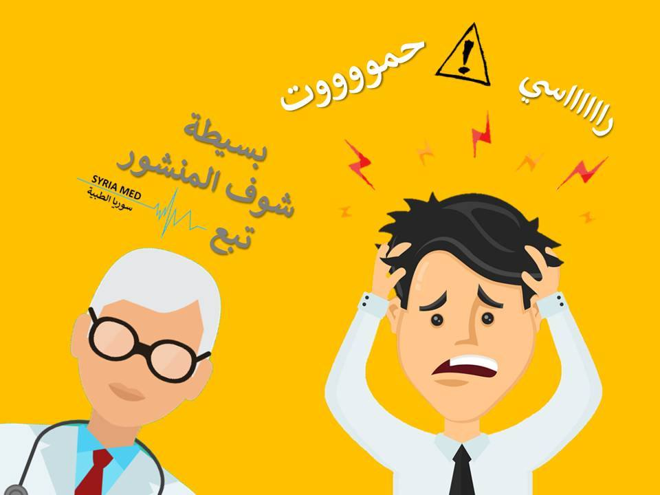

السيتامول؟ تعرف على فوائده واستخداماته ومضاره

وهو مسكن لألأم وخافض للحرارة مستخلص من القطران اسمه العملي باراسيتامول
شائع كثيرا أن يكون على شكل حبوب
تستمر فاعاليته 6 ساعات وتبدأ فعاليته بعد 10 دقائق الى ساعة
ويساخدم لعلاج الحرارة العالية و الصداع والاوجاع
تعرف اكثر عليه في هذه المقالة
READ MORE